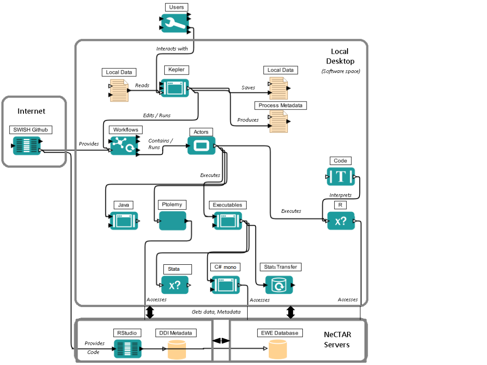

SWISH High Level System Description
Table of Contents
1 Introduction
This is the high level system description document for the Scientific Workflow and Integration Software for Health (SWISH) project. The project is designed to support climate impact assessment on Human Health.
SWISH tools will include methods to chain together tasks that perform operations in the domains of:
- data acquisition,
- data transformation,
- mathematical operations,
- graphing,
- statistical analysis, and
- output.
The project will produce an enhanced research data management and analysis system that will address the current barriers and eventually provide support for a diversity of epidemiology researchers (e.g., bio-surveillance, wildlife health, and emerging infectious diseases).
The systematic organisation and synthesis of datasets is vital for analysis and inference in any study of population health. However it is all too easy for datasets to be large and unwieldy. Our effective use of these datasets is currently limited, and is heavily dependent on the individual abilities of a researcher to access and use the existing computational and data infrastructure.
2 Structure of the System
The system will include both an operational web-based research platform as well as enhance traditional desktop client-side workflows, so that it boosts capacity without compromising expertise and trusted workflows. The software ecosystem is summarised in the image below:

3 Description of the Components
3.1 Kepler
This is the system being used to drive the scientific workflows of the software system. Its value to the system is its ability to connect high level operations together, and run simple algorithms. Complex algorithms however are cumbersome and custom components will be implemented as necessary. The project is leveraging on Keplers existing functionality and components, its ability to develop new components, load and save workflows, and edit workflows in a graphical user interface.
3.2 Workflows
These are instances of captured processes. The first demonstration will be the access to and analysis of the Extreme Wether Events (EWE) database. The use of Kepler workflows will allow users to create there own work flows that can be developed and used after the project delivery. Workflows developed during the project will be made available on the project Git repository.
3.3 Actors
“Actors” is the term used by Kepler to label the building blocks of a work flow. Workflows are created by linking together actors that combined work towards a singular goal. Custom actors will be developed for the project and stored on the project Git repository. Custom actors will include data and table operations, data access, statistical operations, and access to custom data analysis. Operations will consist of data retrieval and storage operations, statistical operations, data table operations, and implementations of custom data analysis like the heat wave indices.
3.4 Java
Java is the run time environment of Ptolemy – the framework Kepler is built upon. Ptolemy has the ability to include custom actors written in java code. While Java is a powerful language, Ptolemy also supports executing R code, and directly running executables. This will be used to invoke Stata, C*, and R code for which there is more much experience possessed by project members. Java will be used as necessary to integrate with other languages efficiently.
3.5 R
R is a community driven open source statistics tool that is easily run from Kepler. It will be used as appropriate to make existing analysis work in R available as a component in a work flow.
3.6 Stata
Stata is a commercial statistics tool. This will be used to make actors for preforming data and statistical operations as well as providing access to any existing analysis work that is to be brought into the system. Stata is a separate software tool for which users will need to have a licence and install separately on the machine.
3.7 C# / Mono
C# is a programming language able to run on windows and linux based systems. It will be used as necessary for complex processing that is not easily supported by the other code environments used in the system.
3.8 StatTransfer
StatTransfer a commercial tool that can use many different file and data formats common in statistical work. The project will leverage on its ability to convert between the different formats extending the system’s ability to use data from different sources. StatTransfer is a separate software tool for which users will need to have a licence and install separately on the machine.
3.9 DDI Metadata
The Data Documentation Initiative (DDI) http://www.ddialliance.org/ is a Metadata Standard that is used extensively in the Social Science data domain. The DDI-index Metadata Catalogue is an open source tool for searching through metadata records of a data warehouse such s the EWE data base. It provides the users the ability to manually search for data, but also for Kepler actors to access metadata records automatically. We use an Oracle XE database as the backend to the ddiindex and maintain records of all authorised database users. Oracle XE is a free version of the well-known Oracle Database system.
3.10 R Studio
R studio is an environment allowing users to run R code remotely. It provides R users a secure environment to process data. This is separate from the Software system.
3.11 EWE Data base
A database of extreme weather events. This is a symbiotic pair of Virtual Machines on the Nectar Research Cloud. The two servers perform dedicated to:
- 1. Geographical Information System Database server
- 2. Statistical Analysis and metadata registration
3.12 Github
The Github service is a free cloud based code management facility linked to the Git version control system. Gitpages is an additional service provided by the site to host project specific websites, wikis and bug-tracking web tools.
4 Demonstration of Value
The first demonstration of the system will be the creation of an online validated Extreme Weather Events (EWE) database from historical data that can be queried repeatedly, easily and effectively. To request access please go to this webpage [Click Here](/about.html).
The Extreme Weather Events Data will be merged with Health, Population and Climate Change scenario data to project future health impacts; and the impact assessment will be able to be easily updated with future additional health, population and weather data; or new Climate Change model versions.
SWISH is funded by the Australian National Data Service (http://ands.org.au/).